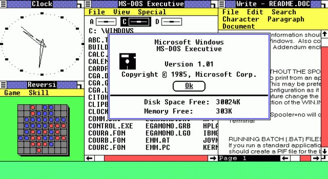
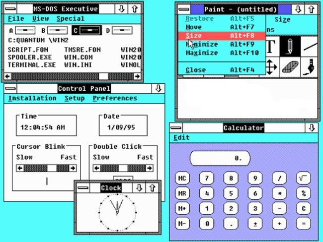
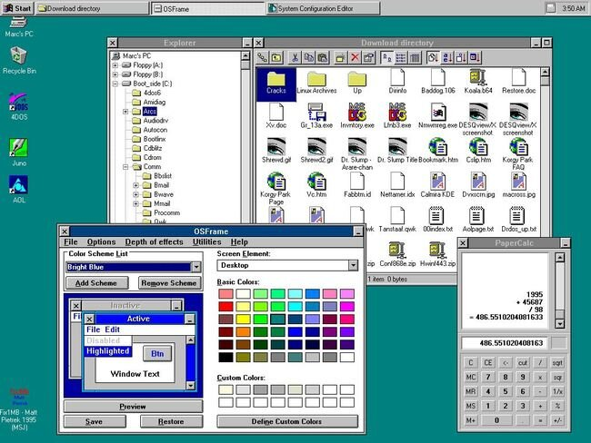
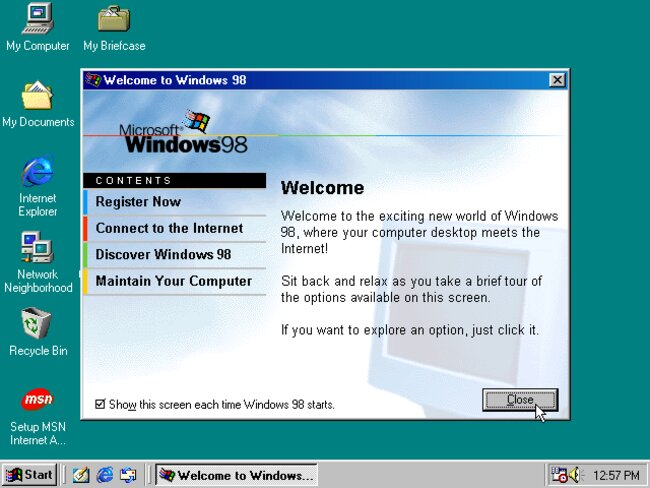
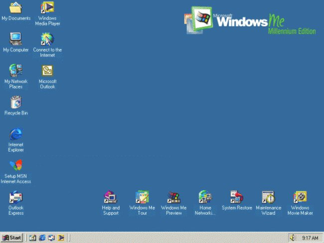
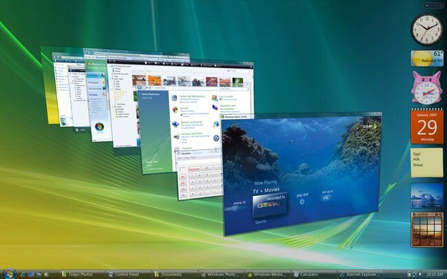
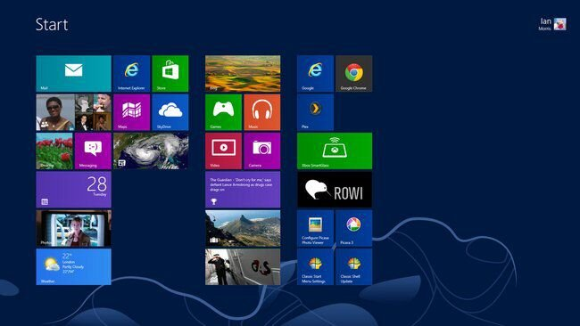
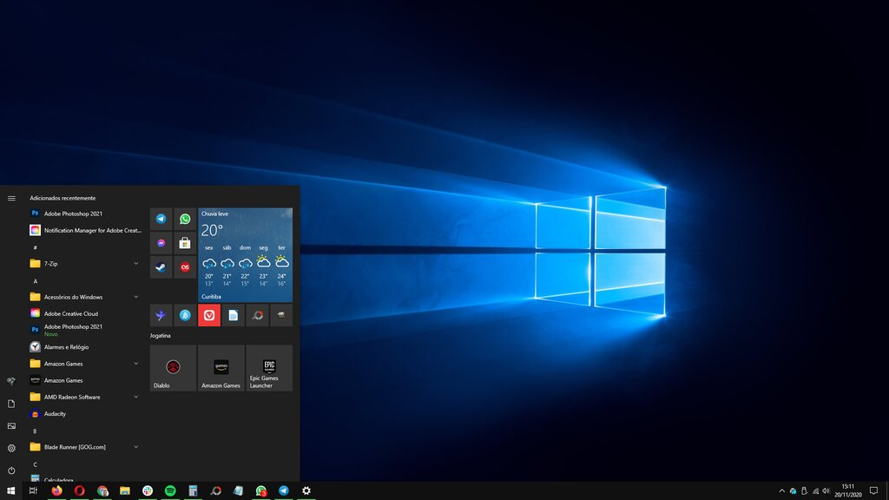
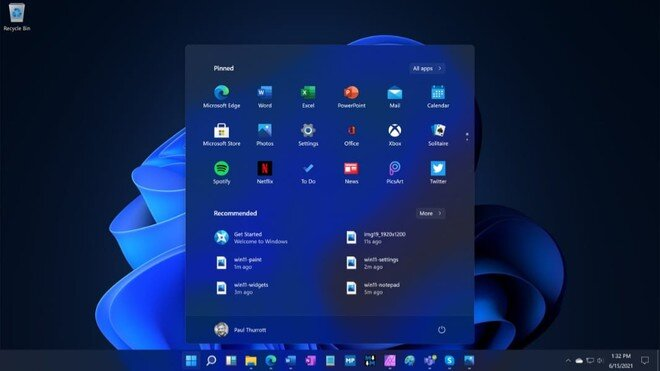

Versões do Windows ao Longo das Épocas
O Windows teve várias versões durante sua existência, várias são marcantes, seja por sua eficiência ou então pelo desgosto da maioria dos usuários em determinadas versões.
| Versão | Lançamento |
|---|---|
| Windows 1.0 | 1985 |
| Windows 2.0 | 1987 |
| Windows 3.0 | 1990 |
| Windows 95 | 1995 |
| Windows 98 | 1998 |
| Windows ME | 2000 |
| Windows XP | 2001 |
| Windows Vista | 2007 |
| Windows 7 | 2009 |
| Windows 8 | 2012 |
| Windows 10 | 2015 |
| Windows 11 | 2021 |
Windows 1.0
O Windows 1.0 foi onde tudo começou, lançado em 1985. Até sua chegada, os sistemas operacionais funcionavam apenas em modo texto e este foi o primeiro a oferecer uma interface gráfica em cima do modo texto (MS-DOS) de maneira que qualquer pessoa pudesse interagir com o sistema sem precisar digitar comandos no terminal. Para os padrões de hoje ele pode parecer feio, simples e antiquado, mas saiba que foi extremamente importante por introduzir ao mundo conceitos que hoje são completamente normais como menus que caem ao serem clicados, a utilização de uma seta para apontar e clicar em elementos, barras de rolagem e as janelas.

Windows 2.0
Se você reparar bem, as janelas da interface do Windows 1.0 não se sobrepunham. O Windows 2.0 chegou em 1987 trazendo essa funcionalidade, o que provocou um processo por parte da Apple alegando que a Microsoft havia copiado o sistema da empresa da Maçã - a Apple perdeu a briga. Capaz de rodar sem um disco rígido, o 2.0 se tornou mais popular do que o antecessor.

Windows 3.0
Foi com o Windows 3 que o sistema realmente começou a decolar e ganhar espaço. Lançado em 1990, ele veio com uma interface reformulada, delineando o padrão visual que convivemos por muitos anos até a chegada do Windows 8. Além do visual renovado, ele trouxe diversas melhorias como suporte a drives de CD e placas de som, além de vir pré-instalado em discos rígidos, ocupando "monstruosos" 5 MB. Além disso, o Windows 3.0 introduziu softwares importantes como o Bloco de Notas, um editor de texto e o clássico Paciência.

Windows 95
Lançado em 1995, o sistema foi um marco na história da Microsoft, do próprio Windows e, quem sabe, até da humanidade. A interface gráfica, mais refinada do que nunca, praticamente não mudou visualmente até a chegada do Windows XP e em comportamento até o Windows 8 em 2012. Nesta versão, a Microsoft introduziu o Windows Explorer e a barra de tarefas, presentes até os dias de hoje e que não devem desaparecer tão cedo. Importante notar o Internet Explorer na captura de tela. No entanto, ele não vinha instalado por padrão, mas era possível adquiri-lo em um pacote de atualização chamado Plus.

Windows 98
O Windows 98 foi lançado em 1998, como o nome sugere, e trouxe vários avanços em relação ao 95, apesar de não ter sofrido mudanças visuais significativas. Importante mencionar o suporte a dispositivos USB e múltiplos monitores e a chegada do Internet Explorar já instalado por padrão - foi aí quando começou a derrocada do Netscape. No ano seguinte, a Microsoft lançou o Windows 98 Second Edition (SE), que corrigiu vários bugs da versão anterior.

Windows ME
Na virada do milênio a Microsoft introduziu o Windows Millenium Edition (ME). O software foi meio que um fiasco para a empresa e 1 ano depois foi substituído pelo Windows XP. O ME oferecia um boot mais rápido do que os anteriores, mas isso fazia com que programas mais antigos baseados em MS-DOS não funcionassem mais. O Windows ME era voltado para usuários domésticos e o Windows 2000 era a versão para negócios.

Windows XP
Sua característica mais marcante, à primeira vista, foi o visual caprichado, com cores vivas, a montanha verde com céu azulado, a barra de tarefas azul e os demais elementos que marcaram uma nova era no design do sistema. Além disso, unido aos avanços de hardware e softwares de terceiros, tornou-se uma versão extremamente confiável para as mais variadas atividades e, hoje, ainda temos milhares de estabelecimentos rodando o XP em seus computadores.

Windows Vista
Lançado em 2007, o Windows Vista foi um dos maiores fiascos da empresa. Apesar de ter um visual bastante refinado, com transparências e efeitos especiais em 3D, o sistema não decolou por causa de inúmeros atrasos e problemas técnicos. Além disso, ele não oferecia nenhuma vantagem significativa sobre o Windows XP, que ainda era muito bom e confiável.

Windows 7
Após o fracasso do Windows Vista, a empresa lançou o Windows 7, que veio para salvar a pátria. Depois do XP, o 7 foi o sistema da "zona de conforto" dos usuários, já que oferecia um visual bem agradável e desempenho e confiabilidade nos mesmos níveis do Windows XP. Com o encerramento do suporte à versão antiga, o Windows 7 passou a ser o sistema operacional mais utilizado do mundo.

Windows 8
Tudo ia bem com o Windows 7, mas, em 2012, a Microsoft colocou os pés pelas mãos em uma aposta que não deu muito certo: eliminou o Menu Iniciar e empurrou goela abaixo dos usuários os "Live Tiles", quadrados vivos que continham programas e exibiam informações relevantes em tempo real, em uma interface voltada para dispositivos com tela sensível ao toque.
O problema é que quase ninguém possui uma tela do tipo e a maioria já está acostumada a trabalhar bem com os bons e velhos teclado e mouse. Além disso, a falta do Menu Iniciar deixou muita gente perdida, o que contribuiu para a alta taxa de adoção do Windows 7. Resultado: o Windows 8 foi um fiasco.

Windows 10
O Windows 10 chegou como a promessa da Microsoft para introduzir aos usuários o sistema operacional do futuro. Com ele, a empresa não apenas resolveu os problemas do Windows 8, mas criou uma nova rotina de atualizações e distribuições. Apresentado para ser o "Windows defintiivo", essa versão ganha novidades semestralmente e vem se tornando cada vez mais robusta.

Windows 11
O Windows 11 em suma é um Windows 10 com alterações visuais na aréa de trabalho, barras de tarefa e outros, além disso, a empresa promete uma maior compatibilidade entre aplicativos Android e também proporcionar uma experiência do Windows mais acessível que tem o poder de ajudar a combater a 'divisão da deficiência'. Assim, contribuindo com a educação e com a inserção dessas pessoas no mercado de trabalho em todo o mundo.

Fonte: Canal Tech.
Inicio da página